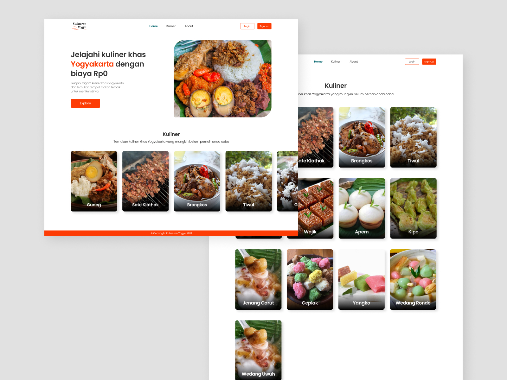

Apa itu Kulineran Yogya?
Kulineran Yogya adalah sebuah projek tugas akhir seorang mahasiswa multimedia. Website ini juga dibangun sebagai portfolio penulis.
Apa tujuan Kulineran Yogya?
Website ini memiliki tujuan untuk mengenalkan budaya kuliner khas Daerah Istimewa Yogyakarta. Website ini berisi materi-materi beberapa kuliner khas Yogyakarta dan disertai juga dengan gambar. Sehingga dapat memberikan gambaran kepada pembaca terhadap kuliner yang sedang dipelajari.
